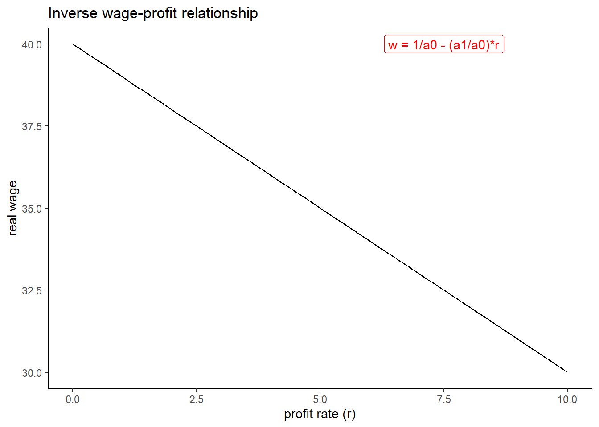
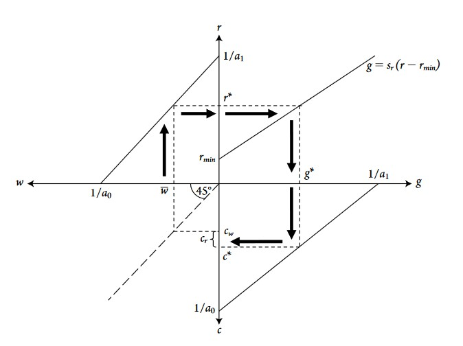
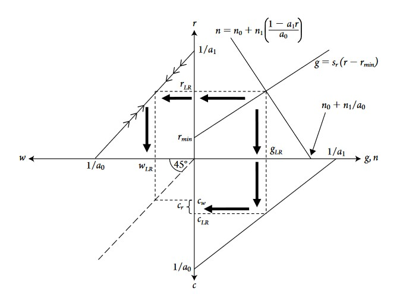

# how to write the leontief production function in R
leontief <- function(l, k, a0, a1) (min(c(l/a0, k/a1)))2 Classical-Marxian Models
What follows is extensively based on the second chapter of Heterodox Macroeconomics: Models of of Demand, Distribution and Growth (2019) by Robert A. Blecker and Mark Setterfield
2.0.1 Assumptions of the model
The classical-marxian model, named after Smith, Ricardo (who are considered as classics) and marx and based on their important work, comes its specific assumptions:
- Constant or full capacity rate of utilization.
The latter, \(u = \frac{Y}{Y_{K}}\), is ratio of the actual output (GDP) divided by the full capacity output \(Y_K\), which is the level if output if all capital in the economy was used at its full capacity (no unused machines, raw materials…). If this ratio is equal to one, that means that the economy is at full capacity, the actual output is equal to its capacity level. If the ratio is for example 0.5, that means that actual output is half its level if all capital was fully used. But why does this model make such an assumption? This assumption stands in sharp contrast with the (neo)kaleckian model which typically reverses this assumption stating that capacity rate \(u\) is an important adjusting variable.
Before explaining the reason behind this assumption, it is necessary to understand the classical-marxian conception of the production process (how inputs, capital and labor, are combined to produce either goods or services), which rests on the Leontieff production function. The latter can be written as
\[ Y = min(\frac{N}{a_0}, \frac{K}{a_1}) \]
With N and K respectively labor and capital, \(a_0 = L/Y\) the labour-output ratio (the quantity of labour required to produce one unit of ouput) and \(a_1 = K/Y\) the quantity of capital required to produce one unit of output (capital-output ratio).
\(\frac{N}{a_0}\) is the maximum output that can be produced with available labour resources while \(\frac{K}{a_1}\) represents maximum output when all capital resources are used.
For instance, if three units of labor are required to produce one unit of output and one unit of capital is required to produce one unit of output, what will be produced if we have N = 9 and K = 4 ?
In our example, \(a_0 = 3/1\) (three units of labor required to produce Y = 1) and \(a_1 = 1\) (one unit of capital to produce one unit). We compute \(N/a_0 = 9/3\) and \(K/a_1 = 4/1\). Since the former \(9/3 = 3\) is bigger than \(4\), all 9 units of labor will be used to produce 3 units of output. Note that at Y = 3, one unit of capital will be leftover and be unused. In this example, output is “labor-constrained” because it is the amount of labor which is fully used and capital which is not. Output at full employment is \(Y_N = N/a_0\).
leontief(l = 9, k = 4, a0 = 3, a1 = 1)[1] 3Considering labor as the constraint is what the (neo)kaleckian model does, while the classical-marxian model considers that capital is the binding constraint on potential output. In the classical-marxian model, all capital is used and thus output is output at full capital utilization \(Y_K = K/a_1\).
While both classical-marxian and (neo)kaleckian models use Leontief production function (and are here different from neoclassical models which use cobb-douglas production function), they differ by what they consider as the constraining factor on output: labor for (neo)kaleckian model \(Y_N\), capital for classical-marxian model \(Y_k\).
Thus, considering that capital is the constraint implies the possibility to consider that the economy can reach a full capacity utilization \(u = Y/Y_k\), this is what the classical-marxian model does thus why \(u\) is considered constant at full capacity \(u = 1\).
- Constant and Given Technology
There is no technological change in the classical-marxian model. However, the effects of exogenous technological change can still be analyzed.
2.0.2 Basis of the model
2.0.2.1 Wage-profit trade-off
The main equation is derived from the income approach to national income, which is an accounting identity showing that national income is the sum of all income sources in the economy. The model makes here other assumptions: no government, closed economy, only workers and capitalists, only one good produced, which are nessecary to write:
\[ PY = WL + rPK \] Which is the national income identity after those assumptions, with \(P\) the price, \(Y\) the output, \(W\) the nominal wage rate, \(L\) the amount of labor employed, \(r\) the profit rate and \(K\) the real stock of capital.
From this equation above is derived one the main equation of the model, the inverse wage-profit relationship:
\[ w = \frac{1}{a_0}-\frac{a_1}{a_0}r \]
w <- function(r) 40 -1*r
ggplot(data = tibble(x = 0:10), aes(x = x))+
geom_function(fun = w)+
annotate(geom = "label", x = 7.5, y = 40, label = "w = 1/a0 - (a1/a0)*r", color = "red")+
theme_classic()+
labs(title = "Inverse wage-profit relationship",
x = "profit rate (r)", y = "real wage")
This equation also implies an inverse relationship between consumption and growth
\[ c = \frac{1}{a_0}-\frac{a_1}{a_0}g \] With \(c\) consumption of both workers and capitalist and \(g\) the rate of capital accumulation \(g = \Delta{K}/K = I/K\)
These two relationships and hence trade-off between wage and profit, and consumption and growth are the implications of the two main assumptions explained above: constant rate of capacity utilization and given constant technology. Technological change or rise in \(u\) can improve the wage-profit trade-off and thus make both profits and wage rate rise (same for consumption-growth trade-off). Graphically, the slope of the curve above would either shift upward or one of the intercept increase.
2.0.2.2 Saving function
The model makes here another important assumption: all saving is done by the capitalist class. All savings come out from of the profits received by the capitalists. Another important feature is the fact that the classics and Marx did not distinguish between savings and investment (“the purchase of newly produced capital goods, such as machinery, equipment or structures”(p.63)). In C-M terminology, “accumulation” means the mechanistic flow between savings, investment and thus growth. This leads to the “accumulation function”:
\[ g \equiv I/K \equiv S/K = s_r(r-r_{min}) \]
\(g \equiv I/K \equiv S/K\) (growth \(g\) is equal to the investment rate \(I/K\) which is the same as saving rate \(S/K\)) comes from this non-distinction between saving and investment. \(s_r\) is the proportion capitalists save out of their profits \(r\). This equation means that growth can increase only with an increase in the saving rate of the capitalists.
2.0.3 The three equations and the alternative closures
2.0.3.1 3 Equations
The basic model is thus based on the three main equations
- Profit-wage trade-off
\[ w = \frac{1}{a_0}-\frac{a_1}{a_0}r \]
- Consumption-growth trade-off
\[ c = \frac{1}{a_0}-\frac{a_1}{a_0}g \]
- Accumulation function
\[ g \equiv I/K \equiv S/K = s_r(r-r_{min}) \] However, the model is not “closed” in the sense that all the main variables (w, r, s_r, g) are endogenous (they all are a function of one another). The model needs thus to be “closed” by adding an exogenous variable. Since the classics and Marx did not give a precise and consistent closure (exogenous variable), the textbook gives four “alternative closures” which come from different interpretation the classics and Marx.
2.0.3.2 4 alternative closures
- An exogenously given real wage \(\bar{w}\)
Which represents an ordinary standard of living for a working-class family. This should not be confounded with the infamous “iron law” of wages (that wages will always tend to go to the subsistence level, this was made popular by Ferdinand Lassalle and Malthus but has nothing to do with Marx and the classics). This exogenous wage rate \(\bar{w}\) is given, but socially and historically determined and varies across countries and time. This is not a natural/physical minium subsistence wage.
- Exogenous given wage share of national income
This assumes that wages are determined through a bargaining process in which workers can bargain with capitalists to get wages such as a given wage share of national income is achieved. Note that the wage share can be written as \(\psi = wa_0 = w*L/Y\) and the profit share \(\pi = ra_1=rK/Y\). The real wage \(w\) can be written as negatively related to the profit share \(\pi\)
\[ w = (1 - \bar{\pi})/a_0 = (1 - \bar{\pi})Q \] With \(Q=Y/L\) labour productivity.
- Full employment or constant employment
This closures explains that wage depends on the balance between labor demand and supply. Increase in labor demand tend to increase wages whereas the growth in labor supply will tend to decrease wages. A rapid growth of labor demand increase the bargaining power of workers, who can bargain higher wages and conversely when population and labor supply increase rapidly.
This closure states that the change in real wage \(\hat{w}\) is a negative function of growth in labour supply \(n\)
\(\hat{w} = \phi(g - n), \phi'>0\)
Thus, wage is constant when \(g = n\)
But then, the manual (on page 71) considers another function, which describes the growth of labor force \(n\) as a positive function of real rage \(w\), the idea is that the higher wage leads to higher population growth and thus higher labor supply growth:
\(n = n_0 + n_1w\)
- A given rate of profit, determined by financial market forces
The profit rate is determined by the interest rate on loans to firms \(i\) and by a risk premium \(\lambda\):
\(r = i + \lambda\)
2.0.4 Effects of exogenous change
2.0.4.1 Vizualization of the models
2.0.4.2 First and second closures

2.0.4.3 Third closure

Since the fourth closure is in my opinion not really important, I will mostly focus now of those closures above.
2.0.4.4 Effects of exogenous change in propensity to save
What happens if the saving propensity out of profits, \(s_r\), rise or fall?
Closure 1 and 2
If the propsensity to save increase, the accumulation function curve becomes flatter (attention: in the graph above, the y and x axis are inverted on the right quadrant, where the accumulation function is drawn. So a rise in the slope implies a flattening of the curve). Since the real wage (or wage change) is exgenously given, it does not change. What changes are the growth (accumulation) rate and consumption: accumulation and growth increase because more profits are saved and invested into new capital. Consumption decreases because since capitalists increase their saving propensity, less of their profits are dedicated to personal consumption. Conversely, if the saving propensity decreases, accumulations and growth decrease and consumption increase. The real wage and profit rate remain unchanged.
\(\nearrow s_r \Rightarrow \nearrow I/K \Rightarrow \nearrow g, \searrow c\)
Closure 3 (natural rate of growth closure)
An increase in the propensity to save will again make the accumulation curve rotate down to the right (the slope increase). The direct short run effect is a rise in growth rate g. Then, this increase in growth rate makes labor demand increase faster than labor supply, resulting in a rise in the real wage. The rise in real wage decreases the profit rate and thus the growth rate decreases until the growth of labor demand and labor supply are equal. Whereas the growth rate g ends up at the same level or higher depends if labor supply is considered as endogenous or exogenous. If it is endogenous, the increase in labor supply after the increase in real wage will be faster and the new equilibrium growth rate will be higher than the original level. If labor supply is exogenous (a vertical curve in the upper-right candrant), the equilibrium growth rate cannot rise in the long run and will return at its original level.
Endogenous labor supply: \(\nearrow s_r \Rightarrow \nearrow \nearrow g, \Rightarrow \nearrow w, \searrow r \Rightarrow \nearrow n \Rightarrow \searrow g\),
but with final g > initial g. Note that under these conditions, both the growth rate and the real wage rise.
Exogenous labor supply: \(\nearrow s_r \Rightarrow \nearrow \nearrow g \Rightarrow \nearrow w, \searrow r \Rightarrow \searrow \searrow g\)
2.0.4.5 Effects of redistribution of income
Closure 1 and 2
A rise in real wage or wage share would decrease the profit rate (recall the trade-off between wage and profit), which would decrease the growth rate (less is saved and invested since profits decrease). Consumption rises due to the increase in real wage/wage share
\(\nearrow \bar{w} \Rightarrow \searrow r \Rightarrow \searrow g \Rightarrow \nearrow c\)
A decrease in real wage or wage share would have the opposite effects.Closure 3 natural rate of growth
In this closure, a change in real wage or wage share would be the effect of an exognous change in population growth (and thus of labor supply). A rise in real wage would happen if there is a negative exogenous shock to population and labor supply (for instance a brutal epidemic like the black death, which decreased population a lot in the 14th century and made wages rise because of labor supply scarcity). The curve n = n0 + n1*w shifts to the left, real wages rise, profit rate decreases, growth rate decreases and concumption increases.
\(\nearrow n_0 \Rightarrow \nearrow w, \nearrow c \Rightarrow \searrow r \Rightarrow \searrow g\)
2.0.5 Effects of technological change
The manual presents four types of technological change:
Harrod-neutral: pure labor saving technological change
Labor productivity rises, but capital productivity remains unchanged
\(\nearrow Q = Y/L = 1/a_0\)
Hicks-neutral: factor-saving technological change
Both capital and labor productivity rise
\(\nearrow Q = Y/L = 1/a_0, \nearrow Y/K = 1/a_1\)
Marx-biased: labor saving, capital using
Labor productivity increases, but capital productivity decreases
Solow-neutral: pure capital saving technological change
Capital productivity rises, with labor productivity unchanged
All those patterns of technological change, with the exception of the marx-biased one, will improve the wage-profit trade-off, the curve of the latter shifting outward. Wage and profit as well as growth rise. Under the natural rate of growth closure (3) with exogenous labor supply, the long-run growth rate does not increase, however.
2.0.5.1 Marx-biased technological change the falling tendency of the rate of profit (FTRP)
The FTRP is perhaps one of the most famous claim/theory of Marx. In Capital Volume III, Marx exposes this theory, which claims that technological change, by increasing labor productivity while decreasing capital productivity, will lead to a fall in the profit rate. The manual claims that Marx makes one important but often forgotten assumption: a constant rate of exploitation \(e = s/v\) with s the surplus value and v the value of labor power. Blecker and Setterfield argue that assuming a constant rate of exploitation is the same as assuming a constant wage share and profit share.
Recall that the profit share can be written as \(r = \pi / a_1\), if \(\pi\) the profit share is constant and marx-biased technological change happens, \(a_1\) will increase (\(a_1\) is the inverse of capital productivity \(a_1 = K/Y_k\)). and thus decrease profit rate \(r\). Thus, under the constant wage share closure, Marx-biased technological change does imply a fall in profit rate. However, it is unlikely that capitalists will let their profit rate fall without reacting and trying to suppress wages or slow down accumulation and growth, which would decrease labor demand, reduce workers bargaining power and thus lead to lower wages and to a recovery of the profit rate.
What about the third closure? Under this closure, the fall in profit rate does not happen, mainly because of the effect of the increase in labor supply resulting from the increase in real wage. If labor supply is considered as exogenous, the long run profit and growth rate cannot change: \(a_0\) falls more than real wage increase, and thus \(\pi = 1-wa_0\) increases. Thus, the FTRP is false under this closure, but another of Marx prediction is true: the relative immiseration of the proletariat, since the profit share increases (and wage share decreases).